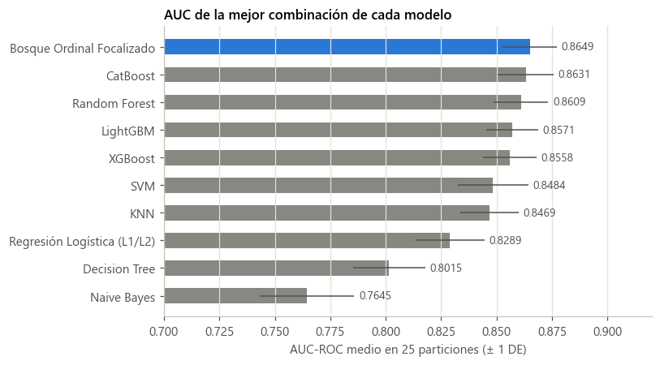

Modelos benchmark y mejores combinaciones#
Criterio de selección#
Del universo de 136 combinaciones del Entregable 2 (140 menos las 4 de KNN con class_weight, que no existen porque KNN no admite pesos por clase), se elige para cada uno de los 7 modelos base la combinación de balanceo y optimizador con el mayor AUC medio del bucle externo de la validación anidada 5 × 3:
| Modelo | Balanceo | Optimizador | AUC externo (media ± DE) | Combinaciones evaluadas | Motivo |
|---|---|---|---|---|---|
| Random Forest | class_weight | Grid Search | 0.8605 ± 0.0152 | 16 | mayor AUC medio externo entre sus combinaciones |
| XGBoost | SMOTE | Bayesiano | 0.8578 ± 0.0162 | 16 | mayor AUC medio externo entre sus combinaciones |
| SVM | class_weight | Random Search | 0.8479 ± 0.0168 | 16 | mayor AUC medio externo entre sus combinaciones |
| KNN | sin_balanceo | Bayesiano | 0.8449 ± 0.0148 | 12 | mayor AUC medio externo entre sus combinaciones |
| Regresión Logística (L1/L2) | sin_balanceo | Bayesiano | 0.8284 ± 0.0203 | 16 | mayor AUC medio externo entre sus combinaciones |
| Decision Tree | sin_balanceo | Random Search | 0.8122 ± 0.0212 | 16 | mayor AUC medio externo entre sus combinaciones |
| Naive Bayes | class_weight | Bayesiano | 0.7645 ± 0.0123 | 16 | mayor AUC medio externo entre sus combinaciones (empate exacto con sin balanceo) |
La mejor combinación global es Random Forest con class_weight y Grid Search (AUC 0.8605 ± 0.0152). En la comparación de Friedman y Nemenyi del Entregable 2 (60 bloques: pliegue × balanceo × optimizador), Random Forest tuvo el mejor rango medio (1.33) y formó el grupo de finalistas junto con XGBoost (1.72): su diferencia de rangos (0.39) es menor que la diferencia crítica (1.16). En el Model Confidence Set del Entregable 2, las configuraciones de Random Forest con class_weight también quedaron en el conjunto de los mejores. La selección es, por lo tanto, coherente con la comparación estadística y no solo con la métrica puntual.
Métodos recientes del estado del arte#
Además de los 7 modelos vistos en clase se agregan dos métodos de gradient boosting posteriores a XGBoost, que son la referencia en datos tabulares [Grinsztajn et al., 2022]:
LightGBM [Ke et al., 2017]: árboles que crecen por hojas con histogramas y muestreo de gradientes.
CatBoost [Prokhorenkova et al., 2018]: boosting ordenado con árboles simétricos, que reduce el sesgo de predicción del boosting clásico.
Ambos se optimizan con el mismo método bayesiano (TPE) y presupuesto que el modelo original. La ponderación de clases es un hiperparámetro más (balanceo dentro de la búsqueda) y la primera evaluación usa los hiperparámetros por defecto de cada librería, como pide el enunciado.
| Modelo | Hiperparámetro | Rango |
|---|---|---|
| Random Forest | n_estimators | 100 – 500 |
| Random Forest | max_depth | 3 – 25 |
| Random Forest | min_samples_leaf | 1 – 20 (log) |
| Random Forest | max_features | sqrt, log2, None |
| XGBoost | n_estimators | 50 – 500 |
| XGBoost | max_depth | 2 – 10 |
| XGBoost | learning_rate | 0.001 – 0.3 (log) |
| XGBoost | subsample | 0.5 – 1 |
| XGBoost | colsample_bytree | 0.5 – 1 |
| SVM | C | 0.01 – 100 (log) |
| SVM | gamma | 0.0001 – 10 (log) |
| KNN | n_neighbors | 3 – 41 |
| KNN | weights | uniform, distance |
| KNN | p | 1, 2 |
| Regresión Logística (L1/L2) | C | 0.001 – 100 (log) |
| Regresión Logística (L1/L2) | penalty | l1, l2 |
| Decision Tree | max_depth | 2 – 20 |
| Decision Tree | min_samples_leaf | 1 – 60 (log) |
| Decision Tree | criterion | gini, entropy |
| Naive Bayes | var_smoothing | 1e-11 – 1e-05 (log) |
| LightGBM | n_estimators | 50 – 500 |
| LightGBM | learning_rate | 0.001 – 0.3 (log) |
| LightGBM | num_leaves | 8 – 128 (log) |
| LightGBM | min_child_samples | 5 – 100 (log) |
| LightGBM | subsample | 0.5 – 1 |
| LightGBM | colsample_bytree | 0.5 – 1 |
| LightGBM | class_weight | None, balanced |
| CatBoost | iterations | 100 – 1000 |
| CatBoost | learning_rate | 0.01 – 0.3 (log) |
| CatBoost | depth | 4 – 10 |
| CatBoost | l2_leaf_reg | 1 – 10 (log) |
| CatBoost | bagging_temperature | 0 – 1 |
| CatBoost | ponderacion | ninguna, balanceada |
| Bosque Ordinal Focalizado | n_estimators | 100 – 500 |
| Bosque Ordinal Focalizado | max_features | sqrt, log2, None |
| Bosque Ordinal Focalizado | min_samples_leaf | 1 – 20 (log) |
| Bosque Ordinal Focalizado | ancho_agregacion | 0.1 – 5 (log) |
| Bosque Ordinal Focalizado | ancho_particion | 0.1 – 10 (log) |
| Bosque Ordinal Focalizado | desplazamiento | -1 – 1 |
Equidad de la comparación#
Todos los modelos usan las mismas particiones externas e internas, el mismo preprocesamiento (escalado y one-hot dentro del pliegue), la misma métrica interna (AUC) y 40 evaluaciones de hiperparámetros por pliegue externo; Grid Search usa una grilla adaptativa de a lo sumo 40 puntos. El espacio del modelo original tiene 6 dimensiones, más que Random Forest (4) y XGBoost (5) y una menos que LightGBM (7): con el mismo presupuesto, buscar en un espacio más grande es una desventaja para el modelo original, no una ventaja. Al modelo original no se le encoló ninguna configuración inicial.
| Modelo | Evaluaciones por pliegue | Búsqueda por pliegue (s) | Ajuste final (s) | Predicción (ms/vino) | Horas de CPU (25 pliegues) | Memoria del ajuste (MB) | Tamaño del modelo (MB) |
|---|---|---|---|---|---|---|---|
| CatBoost | 40 | 7745 | 162.85 | 0.065 | 53.8 | 45 | 6.0 |
| Bosque Ordinal Focalizado | 40 | 3401 | 58.67 | 2.643 | 23.6 | 424 | 133.2 |
| XGBoost | 40 | 467 | 6.20 | 0.195 | 3.2 | 50 | 2.7 |
| Random Forest | 24 | 130 | 4.33 | 0.278 | 0.9 | 56 | 49.3 |
| SVM | 40 | 81 | 0.59 | 0.479 | 0.6 | 69 | 0.3 |
| LightGBM | 40 | 63 | 0.66 | 0.083 | 0.4 | 7 | 0.8 |
| KNN | 40 | 14 | 0.02 | 0.229 | 0.1 | 4 | 0.7 |
| Regresión Logística (L1/L2) | 40 | 9 | 0.07 | 0.010 | 0.1 | 4 | 0.0 |
| Decision Tree | 40 | 4 | 0.02 | 0.009 | 0.0 | 4 | 0.0 |
| Naive Bayes | 40 | 3 | 0.01 | 0.010 | 0.0 | 4 | 0.0 |
Presupuesto realmente consumido por modelo en vino (25 pliegues). El tiempo se midió con 11 procesos en paralelo en un AMD Ryzen 5 5600GT (6 núcleos, 15.8 GB); la memoria se midió aparte, ajustando cada modelo final en un proceso nuevo.
Resultados de las mejores combinaciones#

Figura 13 AUC medio de las 25 particiones (5 repeticiones × 5 pliegues) de cada modelo. En azul, el modelo original.#
| Modelo | Balanceo | Optimizador | AUC media | DE | AUC repetición 1 | PR-AUC | Brier | F1 (0.5) | IC 95 % (repetición 1) |
|---|---|---|---|---|---|---|---|---|---|
| Bosque Ordinal Focalizado | no aplica (usa la nota ordinal) | Bayesiano | 0.8649 | 0.0123 | 0.8637 | 0.6032 | 0.1075 | 0.496 | [0.852, 0.875] |
| CatBoost | ponderación en la búsqueda | Bayesiano | 0.8631 | 0.0125 | 0.8488 | 0.5991 | 0.1152 | 0.518 | [0.837, 0.860] |
| Random Forest | class_weight | Grid Search | 0.8609 | 0.0124 | 0.8606 | 0.5969 | 0.1087 | 0.451 | [0.849, 0.872] |
| LightGBM | ponderación en la búsqueda | Bayesiano | 0.8571 | 0.0117 | 0.8400 | 0.5809 | 0.1198 | 0.516 | [0.828, 0.852] |
| XGBoost | SMOTE | Bayesiano | 0.8558 | 0.0121 | 0.8569 | 0.5739 | 0.1220 | 0.555 | [0.845, 0.868] |
| SVM | class_weight | Random Search | 0.8484 | 0.0160 | 0.8482 | 0.5422 | — | 0.550 | [0.836, 0.860] |
| KNN | sin_balanceo | Bayesiano | 0.8469 | 0.0131 | 0.8446 | 0.5714 | 0.1131 | 0.441 | [0.833, 0.857] |
| Regresión Logística (L1/L2) | sin_balanceo | Bayesiano | 0.8289 | 0.0155 | 0.8283 | 0.5149 | 0.1189 | 0.387 | [0.815, 0.842] |
| Decision Tree | sin_balanceo | Random Search | 0.8015 | 0.0164 | 0.8128 | 0.4605 | 0.1260 | 0.388 | [0.799, 0.826] |
| Naive Bayes | class_weight | Bayesiano | 0.7645 | 0.0214 | 0.7642 | 0.4548 | 0.2848 | 0.442 | [0.748, 0.781] |
El BOF tiene el AUC medio más alto (0.8649), seguido de CatBoost (0.8631) y Random Forest (0.8609). Los tres quedan a menos de una desviación estándar entre sí (cerca de 0.012), de modo que el orden entre ellos no se puede leer en esta tabla: decidirlo es el objeto de las pruebas pareadas del capítulo 6. Después vienen LightGBM y XGBoost (0.857 y 0.856), SVM y KNN (0.848 y 0.847) y, más lejos, la regresión logística, el árbol de decisión y Naive Bayes. El PR-AUC conserva ese orden. En calibración, el BOF y Random Forest tienen los menores puntajes de Brier (0.108 y 0.109), mientras que los métodos de boosting quedan entre 0.115 y 0.122. El F1 con umbral 0.5 favorece a los modelos entrenados con balanceo (XGBoost con SMOTE, 0.555), porque desplazan las probabilidades hacia la clase minoritaria; el AUC, que no depende del umbral, no premia ese desplazamiento. En la repetición 1 el AUC de CatBoost (0.8488) queda por debajo de su media de 25 particiones: esa diferencia entre repeticiones es la razón para repetir la validación cinco veces y no decidir con una sola.
Reentrenamiento final y serialización#
Con los hiperparámetros que eligió una última búsqueda sobre los 5320 vinos (mismo optimizador, presupuesto y validación interna de 3 pliegues), cada pipeline completo (preprocesamiento, balanceo y modelo) se reentrenó con todos los datos y se guardó en artifacts/<modelo>/modelo.joblib con joblib.dump(..., compress=3). Junto a cada modelo hay un metadata.json (versiones de las librerías, semilla, hiperparámetros, esquema de las columnas de entrada con sus rangos válidos, métricas del bucle externo, tamaño y huella SHA-256) y las predicciones de 200 vinos fijos que verifican la ida y vuelta.
| Modelo | Hiperparámetros finales | Tamaño (MB) | Ida y vuelta idéntica | Diferencia máxima | Árboles desplegados |
|---|---|---|---|---|---|
| Bosque Ordinal Focalizado | n_estimators=438, max_features=None, min_samples_leaf=1, ancho_agregacion=1.2808169943110324, ancho_particion=2.550448049715242, desplazamiento=0.3374414545918779 | 10.44 | sí | 0.0e+00 | 231 de 438 |
| CatBoost | iterations=766, learning_rate=0.013290811331473206, depth=9, l2_leaf_reg=1.8803545997538655, bagging_temperature=0.27583413776432064, ponderacion=balanceada | 1.34 | sí | 0.0e+00 | — |
| Decision Tree | criterion=entropy, max_depth=3, min_samples_leaf=6 | 0.00 | sí | 0.0e+00 | — |
| KNN | n_neighbors=41, weights=distance, p=1 | 0.34 | sí | 0.0e+00 | — |
| LightGBM | n_estimators=155, learning_rate=0.03217554753344029, num_leaves=51, min_child_samples=13, subsample=0.8785359593239845, colsample_bytree=0.6944180659331829, class_weight=balanced | 0.37 | sí | 0.0e+00 | — |
| Naive Bayes | var_smoothing=9.9311272588918e-06 | 0.00 | sí | 0.0e+00 | — |
| Random Forest | max_depth=25, max_features=sqrt, min_samples_leaf=1, n_estimators=500 | 11.01 | sí | 0.0e+00 | 425 de 500 |
| Regresión Logística (L1/L2) | C=1.6342588311759756, penalty=l1 | 0.00 | sí | 0.0e+00 | — |
| SVM | C=5.456725485601478, gamma=0.015876781526923997 | 0.09 | sí | 0.0e+00 | — |
| XGBoost | n_estimators=211, max_depth=10, learning_rate=0.0180703563421257, subsample=0.8340886059849478, colsample_bytree=0.5584737825102304 | 1.26 | sí | 0.0e+00 | — |
En los 10 modelos la predicción del artefacto recargado coincide con la del modelo en memoria. Los dos bosques son los artefactos más pesados (unos 10 MB el BOF y 11 MB Random Forest); CatBoost y XGBoost pesan cerca de 1.3 MB y los demás menos de 0.5 MB. Para que el servicio gratuito de Render (512 MB) los soporte, los bosques se reducen al menor número de árboles cuyo AUC fuera de bolsa queda a menos de 0.001 del bosque completo: el BOF despliega 231 de sus 438 árboles (AUC fuera de bolsa de 0.8609 frente a 0.8617) y Random Forest 425 de 500. La reducción se decide solo con los casos fuera de bolsa, sin tocar los resultados de la validación. Además, los valores de las hojas del BOF se guardan con precisión simple, por lo que su prueba de ida y vuelta admite una tolerancia de 10⁻⁶ entre sistemas operativos.